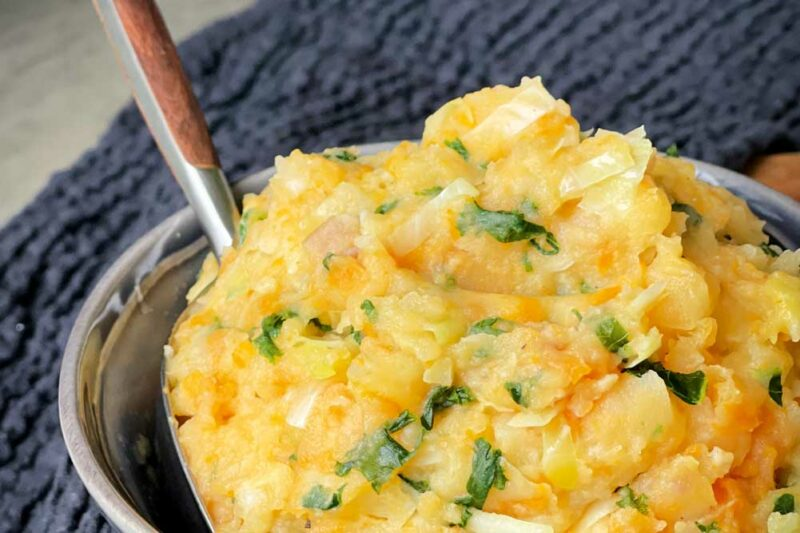

Stoemp

This popular Belgian food is made from mashed potatoes mixed with other mashed up vegetables.
It traditionally includes endive, kale, onions, carrots, turnips, Brussels sprouts, spinach, and greens. Some people also add cream or milk to the mix. Stoemp is quite similar to the English bubble and squeak or American hash and you usually eat it with bacon, sausage, beef, boudinblanc (fried pork sausage without the blood), or noir (black sausage). Alternatively, for a softer flavor, you can make it with Flemish white sausage (witte pens or boudin blanc), which you make with milk.
Ingredients
- 5 large potatoes, peeled
- 4 tbsp butter
- 3/4 cup cream
- 1 small onion, finely chopped
- 2 garlic cloves, finely chopped
- 4 medium leeks, finely sliced
- 1/2 cup vegetable stock
- salt and pepper
- a bit of nutmeg
Steps
- Cook the potatoes until they are just tender (you can cube them which will speed up the cooking time). Drain well and mash (or use a potato ricer for better results).
- While the potatoes are cooking, melt the butter in a large frypan over medium heat.
- Add the garlic and onion, and cook until just softened (do not burn), then add the leeks and saute until everything is just translucent.
- Add the cream and stock. Simmer for approximately 10 minutes.
- Drain the onion mixture but reserve the liquid. Put the liquid back into the pan and reduce by half. This will take 5 minutes or so.
- Once the sauce is reduced mix the onions and potato mixture together. Then return to the pan and stir the sauce through until well combined. Season to taste.
- If the mixture is too dry add more butter or milk if you don't want too much fat.
- This is yummy served with stews and casseroles.